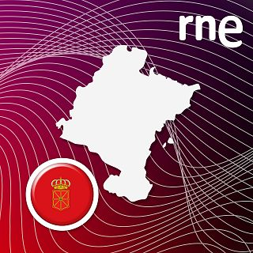

Luryart
Noticias al frente. El resto, estable y claro.
La portada prioriza novedades y avisos. Los conciertos y programas quedan debajo, sin convertir la web en un panel complejo.
Publicacion
Edicion acotada y mantenimiento simple
La seccion de noticias es la unica expuesta al flujo de Telegram.
Conciertos y programas siguen en contenido estable para evitar errores de estructura.
GitHub y Netlify siguen haciendo el despliegue sin tocar el HTML.
Tambien puedes usar el acceso directo de WhatsApp para contrataciones o dudas.
Novedades
Noticias y avisos
Este es el bloque principal de la portada. La noticia mas reciente siempre aparece primero y con mayor visibilidad.
Agenda
Proximos conciertos
Fechas, ciudades y recintos en un bloque secundario, separado de las noticias.
Programas
Servicios musicales
Cada programa mantiene su texto, sus audios y una rejilla de videos que ya puede actualizarse desde contenido.
Zarzuelas
Zarzuela y Opera
Duos, romanzas y repertorio lirico para teatros, parroquias y ciclos culturales.
Recitales
Recitales y conciertos recitativos
Formatos intimos con textos y musica pensados para auditorios y encuentros especiales.
Clasico
Conciertos clasicos con organo
Programas sacros y colaboraciones instrumentales para iglesias y catedrales.
Musicales
Producciones para contratacion
Montajes teatrales y musicales listos para escenarios culturales y eventos.
Zarzuela y Opera
Lurdes Moratinos y Javier Molina presentan un repertorio lirico cuidado, directo y adaptable a distintos formatos.
Recitales y conciertos recitativos
Recitales con textos, reflexion y repertorio vinculado a distintos proyectos culturales y espirituales.

Conciertos clasicos con organo
Repertorio sacro y colaboraciones instrumentales para espacios de especial valor acustico y simbolico.
Musicales para contratacion
Producciones musicales listas para programaciones culturales, campañas y escenarios con publico amplio.